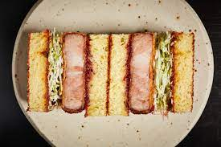

Katsu Sandwich

Description
Succulent Pork Loin crumbed in crispy Japanese Panko wedged between
fluffy soft white bread with a layer of crispy fresh cabbage to add additional texture.
Ingredients
- White Bread
- Pork Loin
- Egg
- White Flour
- Japanese Panko
- Cabbage
- Kelpie Mayo
- Salt
- Pepper
Steps
- Salt and Pepper Pork Loin
- Cover with white flour
- Cover with Egg
- Cover with Panko
- Deep Fry at 175c
- Thinly Slice Cabbage
- Layer sandwich with Cabbage followed by crispy pork
- Press Sandwich down with weights to compress
- Cut crust off sandwich
- Enjoy!